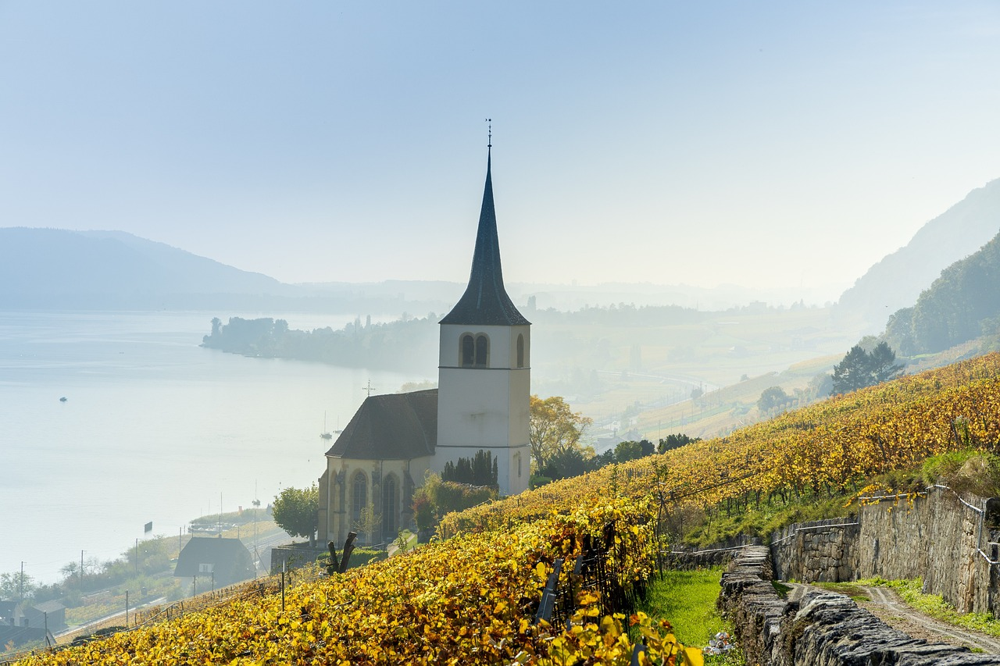

Jako jeden z najdroższych krajów w Europie, Szwajcaria🇨🇭 często omijana jest przez podróżników z ograniczonym budżetem.Mimo to, choć nie jest to tania destynacja, Szwajcaria należy do najpiękniejszych miejsc na świecie.Ten niewielki kraj bez dostępu do morza kryje w sobie mnóstwo skarbów: lśniące jeziora (jest ich ponad 7 000!), malownicze góry (witajcie, Alpy!), urocze średniowieczne miasteczka, zabytkowe miasta, strzeliste szczyty, niekończące się zielone łąki, wspaniałą czekoladę i ser, świetne piwo oraz przyjaznych, gościnnych ludzi. Znana z ośrodków narciarskich, szlaków turystycznych, neutralności w polityce zagranicznej, rozwoju sektora finansowego i bankowego oraz produkcji zegarków szwajcarskich, Szwajcaria ma wiele do zaoferowania.Wszystko tutaj działa jak w zegarku, kraj jest bezpieczny, a ludzie są niesamowicie mili. Uwielbiałem każdą chwilę spędzoną w Szwajcarii – to miejsce zachwyca o każdej porze roku.Ten przewodnik pomoże ci zaplanować podróż, zaoszczędzić pieniądze i jak najlepiej wykorzystać czas w Szwajcarii.
Top 5 rzeczy do zobaczenia i zrobienia we Szwajcarii

1. Poznaj stolicę
Bern to miasto z przepięknym, historycznym centrum pełnym średniowiecznych wież zegarowych, brukowanych uliczek, kościołów i dobrze zachowanych piaskowcowych domów. Koniecznie przejdź się wzdłuż Renu Aare, odwiedź Muzeum Historyczne i Muzeum Einsteina, a także zobacz niedźwiedzie w Parku Niedźwiedzi!
2. Narciarstwo na Matterhorn
Szczyt Matterhorn to jedna z najbardziej rozpoznawalnych atrakcji Szwajcarii. Aby dotrzeć do Zermatt, najbliższego miasta, trzeba skorzystać z pociągu lub autobusu, ponieważ samochody są tam zabronione. Jeśli ominie cię sezon narciarski, spróbuj wędrówki po górach latem. Możesz także wjechać najwyżej położoną kolejką linową na platformę widokową.
3. Zobacz Zurych
Zurych leży nad pięknym Jeziorem Zuryskim, w pobliżu gór, a jednocześnie blisko wielu innych miast (np. Berna). Historyczne centrum miasta, które otwiera się na jezioro, to świetne miejsce na relaks. Idealny dzień to piknik w parku i piwo nad wodą. Miasto jest również pełne sztuki ulicznej i muzeów
4. Przygody w Interlaken
Interlaken to mekka miłośników aktywnego wypoczynku (choć w szczycie sezonu może być tu tłoczno). Na poszukiwaczy adrenaliny czeka tu mnóstwo atrakcji: skoki ze spadochronem nad lodowcem, narty wodne, piesze wędrówki i wiele innych. To także ulubione miejsce backpackerów dzięki licznym darmowym aktywnościom na świeżym powietrzu.
5. Szwajcarska Riwiera
„Szwajcarska Riwiera” znajduje się w regionie Lavaux (kanton Vaud) i rozciąga się wzdłuż Jeziora Genewskiego. Możesz tu zobaczyć wyjątkowe tarasowe winnice z widokiem na jezioro, XII-wieczny zamek Château de Chillon położony na wodzie oraz miasto Montreux, słynące z corocznego festiwalu jazzowego.
1.
Weź udział w wiosennym karnawale Fasnacht
To trzydniowe święto w Bazylei, odbywające się corocznie w poniedziałek po Środzie Popielcowej, to prawdziwe powitanie ciepłych dni. Fasnacht to największy festiwal w Szwajcarii, wyczekiwany zarówno przez turystów, jak i miejscowych. Uczestnicy, nazywani Fasnächtlers, przebierają się w wymyślne kostiumy, które maskują ich tożsamość, i maszerują ulicami w towarzystwie „kliques” – grup grających na bębnach i fletach piccolo. Przez całe trzy dni bary i restauracje pozostają otwarte, a atmosfera jest pełna radości i zabawy.
2.
Zwiedź Genewę
Trzecie co do wielkości miasto w Szwajcarii oferuje zapierające dech w piersiach widoki na Jezioro Genewskie, największą na świecie fontannę, jedno z głównych biur ONZ, zabytkowe centrum miasta oraz ogromny wybór restauracji z międzynarodową kuchnią. Warto odwiedzić Muzeum Sztuki i Historii oraz Muzeum Czerwonego Krzyża i Czerwonego Półksiężyca. Genewa może pochwalić się aż 40 muzeami, więc na pewno nie zabraknie tu atrakcji.
3.
Wybierz się na pieszą wędrówkę na Mt. Pilatus
Tuż za Lucerną znajduje się majestatyczny szczyt Mt. Pilatus, z którego roztaczają się oszałamiające widoki na Alpy Szwajcarskie. Na górę można dostać się gondolą lub pieszym szlakiem (ok. 2 godziny pieszo lub 30 minut kolejką). W północnej części góry znajdują się łatwiejsze trasy, a latem dostępne są dodatkowe atrakcje, takie jak park linowy.
4.
Piknik przy Wodospadach Renu
Zorganizuj piknik i ciesz się widokiem na najpotężniejszy wodospad w Europie. Warto również skorzystać z wycieczki łodzią, która pozwala zbliżyć się do gigantycznej skały na środku wodospadu oraz zwiedzić Basen Wodospadów Renu. W pobliskim Schaffhausen znajduje się średniowieczny zamek, w którym mieści się również tani hostel, idealny na nietypowy nocleg.
5.
Odkryj St. Gallen
Siódme co do wielkości miasto w Szwajcarii, St. Gallen, oferuje piękne muzea, kolorowe murale i unikalną architekturę. Choć nie jest tak popularne wśród turystów, jak inne regiony, miasto tętni życiem dzięki dużej liczbie studentów, a wizyta to świetna okazja, by poznać lokalnych mieszkańców. Koniecznie odwiedź barokową katedrę oraz Bibliotekę Opactwa, która przechowuje prawie 170 000 dokumentów, w tym rękopisy mające ponad tysiąc lat!
Szwajcaria to kraj, w którym koszty podróży mogą być naprawdę wysokie, ale istnieje wiele sposobów na ograniczenie wydatków, szczególnie jeśli lubisz spędzać czas na świeżym powietrzu – natura jest za darmo! Oto kilka strategii, które pomogły mi zaoszczędzić pieniądze podczas mojej wizyty:
1.
Miej przy sobie butelkę wielokrotnego użytku
Woda z kranu w Szwajcarii jest całkowicie bezpieczna do picia, więc zabranie własnej butelki pozwoli Ci zaoszczędzić pieniądze i ograniczyć zużycie plastiku. Polecam butelki z filtrem, zapewniają czystą wodę w każdej sytuacji.
2.
Skorzystaj ze zniżek studenckich
Wiele muzeów i atrakcji turystycznych oferuje ulgi dla studentów. Jeśli masz legitymację studencką, zawsze pytaj o zniżki – możesz zaoszczędzić nawet 20% na biletach wstępu.
3.
Kup miejską kartę turystyczną
Większość miast oferuje specjalne karty dla turystów, które obejmują darmowy wstęp lub zniżki na atrakcje oraz bezpłatny transport publiczny. Jeśli planujesz intensywne zwiedzanie, taka karta może zmniejszyć Twoje wydatki o 20-40%. Upewnij się tylko, że koszt karty nie przewyższa sumy, którą wydałbyś na odwiedzenie wybranych miejsc.
4.
Znajdź nocleg u miejscowych
Platformy takie jak Couchsurfing umożliwiają bezpłatny nocleg u mieszkańców. To świetny sposób na ograniczenie kosztów, a jednocześnie na poznanie lokalnej kultury. Ze względu na popularność tej opcji, warto zaplanować i wysłać zapytania do potencjalnych gospodarzy z wyprzedzeniem.
5.
Podróżuj z BlaBlaCar
Transport w Szwajcarii jest bardzo drogi, często nawet droższy niż zakwaterowanie. Zamiast korzystać z pociągów, które mogą kosztować około 50 CHF za podróż między miastami, warto spróbować BlaBlaCar – platformy do współdzielenia przejazdów. To oszczędniejsza alternatywa, a przy okazji możesz poznać lokalnych mieszkańców. Pamiętaj tylko o elastyczności, ponieważ czasami przejazdy są odwoływane w ostatniej chwili.
6.
Zbieraj punkty hotelowe
Jeśli często podróżujesz, warto korzystać z programów lojalnościowych hoteli, aby wymieniać zgromadzone punkty na darmowe noclegi. Choć ta strategia działa najlepiej dla osób z krajów takich jak USA, Kanada czy Wielka Brytania, może pozwolić Ci zaoszczędzić sporo pieniędzy.
7.
Ogranicz alkohol
Napojów alkoholowych w Szwajcarii nie można nazwać tanimi. Jeśli chcesz trzymać się budżetu, zrezygnuj z alkoholu lub pij w godzinach happy hour albo w barach hostelowych, gdzie ceny są niższe.
8.
Gotuj samodzielnie
Jedzenie na mieście to spory wydatek. Zamiast tego zrób zakupy w sklepie spożywczym i przygotowuj własne posiłki. Choć może to nie być zbyt ekscytujące, znacząco obniży koszty podróży. Dobrym rozwiązaniem jest przygotowywanie lunchu na wynos i jedzenie kolacji w restauracji, jeśli chcesz sobie czasem pozwolić na coś specjalnego.
Dzięki tym prostym wskazówkom możesz jeszcze bardziej cieszyć się swoją podróżą.
1. Transport publiczny
Miasta i miasteczka w Szwajcarii są doskonale skomunikowane dzięki tramwajom, autobusom, kolejkom linowym i pociągom. Każdy środek transportu jest bezpieczny, czysty i punktualny. Pojedynczy bilet kosztuje zazwyczaj od 2,50 do 5 CHF, w zależności od czasu trwania podróży i liczby stref, które obejmuje.
2.
Rozważ zakup Swiss Half Fare Card
Ten karnet pozwala na korzystanie z pociągów, autobusów, statków i większości kolejek górskich za połowę ceny przez cały rok. Kosztuje 185 CHF i opłaca się tylko wtedy, gdy planujesz wydać więcej niż 370 CHF na transport publiczny.
3.
Inną opcją jest Swiss Travel Pass
Jeśli planujesz intensywnie zwiedzać i korzystać z wielu różnych środków transportu, Swiss Travel Pass może być dobrym wyborem. Choć ceny są wysokie – od 232 CHF za 3 dni do 429 CHF za 15 dni – karta obejmuje transport publiczny, przejazdy panoramicznymi pociągami, wstęp do 500 muzeów, wycieczki górskie oraz wiele innych atrakcji. Dodatkowo karta działa jako członkostwo w Mobility i PubliBike, a także zawiera MobilSki w wybranych ośrodkach narciarskich.
4.
Pociągi – najbardziej wygodny sposób podróży
Podróżowanie pociągiem to najpopularniejsza metoda przemieszczania się w Szwajcarii – jest szybka, efektywna i ekologiczna. Na przykład dwugodzinna podróż z Berna do Genewy kosztuje 50-95 CHF, a trasa z Zurychu do Interlaken to wydatek rzędu 54-96 CHF. Za przejazd z Zurychu do Berna (1 godzina) zapłacisz od 40 do 75 CHF. Przy częstych podróżach pociągiem zdecydowanie warto rozważyć zakup Swiss Travel Pass lub Half Fare Card.Aby znaleźć najlepsze trasy i ceny, warto skorzystać z platformy Trainline.
5.
Autobusy – tańsza alternatywa
Choć pociągi dominują w Szwajcarii, FlixBus oferuje kilka tras po kraju. Na przykład przejazd z Zurychu do Berna (90 minut) zaczyna się od 6 CHF, a pięciogodzinna podróż z Zurychu do Genewy kosztuje od 17 CHF. Jest to znacznie tańsza opcja, ale liczba tras jest ograniczona w porównaniu z siecią kolejową.
6.
Loty – zbyteczny wydatek
Ze względu na niewielki obszar kraju, podróż samolotem nie ma sensu. To kosztowna i czasochłonna opcja. Zamiast tego postaw na pociągi lub autobusy, które są znacznie bardziej efektywne.
Szwajcaria, choć droga, oferuje wiele opcji dla oszczędnych podróżników. Rozbudowana sieć transportu publicznego – pociągi, autobusy i tramwaje – sprawia, że przemieszczanie się jest łatwe i wygodne. Karnety takie jak Swiss Half Fare Card czy Swiss Travel Pass mogą znacznie obniżyć koszty transportu, a piękno natury dostępne za darmo czyni kraj idealnym miejscem dla miłośników gór i jezior. Dzięki bezpiecznej wodzie z kranu, możliwościom gotowania własnych posiłków oraz zniżkom w muzeach i atrakcjach, podróżowanie po Szwajcarii może być bardziej przystępne, niż się wydaje.
This site was created with the Nicepage